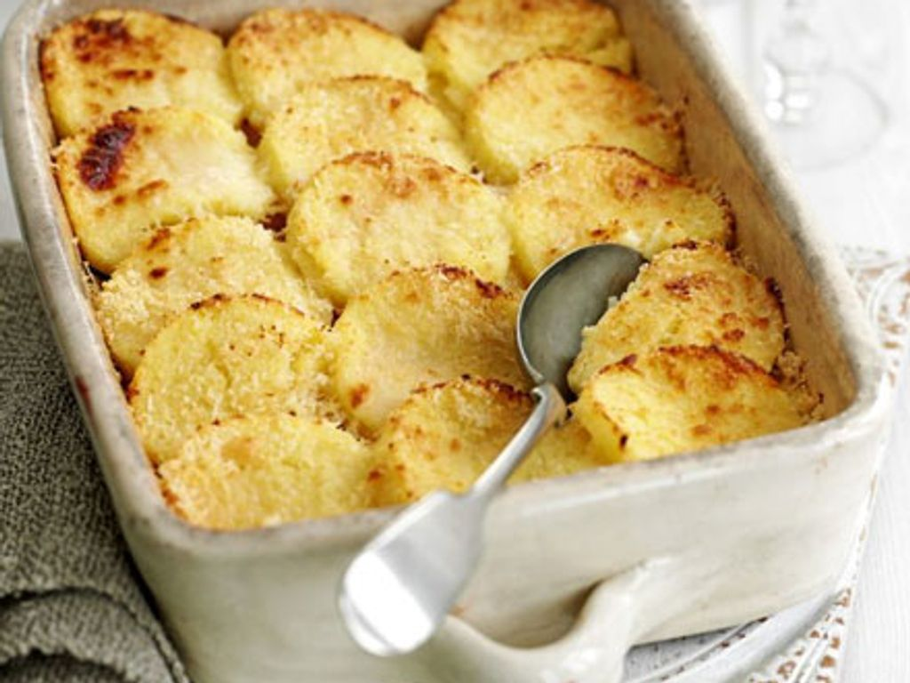

gnocchis à la romaine

4 personnes
- 75g
- 1 pincée de muscade
- poivre
- sel
- 200g semoule de blé
- 1L de lait
- 3 jaunes d'oeufs
- 60g de Parmesan et d'emmental rapé
Préparation
Temps total : 1h10
Préparation : 40 min
Repos : -
Cuisson : 30 min
- Faites bouillir le lait avec du sel, la noix muscade et 25 g de beurre.
- Versez la semoule en pluie sans cesser de remuer.
- Baissez le feu, laissez cuire 3/4 mn en remuant. Retirez du feu et ajouter les jaunes d'oeufs.
- Mélangez bien, ajoutez 2 cuillères à soupe de chacun de fromages.
- Préparez 1 plaque anti-adhésive (1 plat à tarte fait aussi l'affaire). Coulez la pâte dessus et égalisez avec une spatule sur 1 cm d'épaisseur.
- Laissez refroidir, puis découpez avec des emportes-pièces de formes différentes (coeurs, étoiles, rondelles... au choix).
- Beurrez 1 plat à gratin et y mettre les gnocchis. Saupoudrez du reste des fromages et faites gratiner.
- Autres possibilités : paner avec de la chapelure et faire griller, faire griller nature et servir avec 1 sauce tomate...